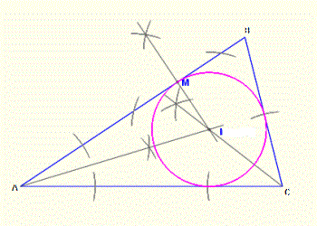

As can be seen in Incenter of a Triangle, the three angle bisectors of any triangle always pass through its incenter. In this construction, we only use two, as this is sufficient to define the point where they intersect. We bisect the two angles using the method described in Bisecting an Angle. The point where the bisectors cross is the incenter. We then draw a circle that just touches the triangles's sides.
The above animation is available as a printable step-by-step instruction sheet, which can be used for making handouts or when a computer is not available.
The image below is the final drawing from the above animation.

| Argument | Reason | |
|---|---|---|
| 1 | I is the incenter of the triangle ABC. | By construction. See Triangle incenter construction for method and proof. |
| 2 | IM is perpendicular to AB | By construction. See Constructing a perpendicular to a line from a point for method and proof. |
| 3 | IM is the radius of the incircle | From (2), M is the point of tangency |
| 4 | Circle center I is the incircle of the triangle | Circle touching all three sides. |